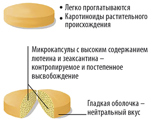

|
 |
| ОКУВАЙТ® ФОРТЕ (OCUVITE® FORTE) таб. | |||||||||||||||||||||||
|
Номер и дата регистрации: RU.77.99.88.003.R.000500.02.20 от 20.02.20 Групповая принадлежность: БАД для поддержания функции органа зрения |
Владелец регистрационного удостоверения: зарегистрировано Представительство: | ||||||||||||||||||||||
Форма выпуска, состав и упаковка Таблетки оранжевого цвета, круглые, двояковыпуклые, средней массой 630 мг; на изломе видны два слоя - оболочка оранжевого цвета и ядро светло-желтого цвета, содержащее микрокапсулы с контролируемым высвобождением лютеина и зеаксантина. Состав: наполнитель: целлюлоза микрокристаллическая (Е460 (i)); аскорбиновая кислота (наполнитель: этилцеллюлоза (Е462)); инкапсулированные эфиры лютеина и зеаксантина из цветков бархатцев (лютеин, зеаксантин, загуститель: желатин, наполнитель: сахароза, увлажнитель: масло пальмовое, антислеживающий агент: кремния диоксид (Е551), антиокислитель: аскорбилпальмитат (Е304), антиокислитель: токоферолы, концентрат смеси (Е306)); токоферола ацетат (стабилизатор: мальтодекстрин (Е1400), наполнитель: крахмал пищевой, антислеживающий агент: кремния диоксид (Е551)); глазирователь: гидроксипропилметилцеллюлоза (Е464), селен (селен-обогащенные инактивированные дрожжи Saccharomyces cerevisiae); цинка оксид; глазирователь: стеариновая кислота (Е570), краситель: титана диоксид (Е171); антислеживающий агент: магния стеарат (Е470b); краситель: рибофлавин (Е101), краситель: оксиды железа (Е172).
* % от рекомендуемого уровня суточного потребления в соответствии с ТР ТС 022/2011 "Пищевая продукция в части ее маркировки" (Приложение 2). 10 шт. - блистеры (3) - пачки картонные. | |||||||||||||||||||||||
| |||||||||||||||||||||||
Описание препарата основано на официально утвержденной инструкции по применению и утверждено компанией-производителем для издания 2023 г. | |||||||||||||||||||||||
Свойства |
Область применения |
Рекомендации по применению |
Побочное действие |
Противопоказания |
Беременность и лактация |
Особые указания |
Передозировка |
Лекарственное взаимодействие |
Условия хранения и сроки годности |
Условия реализации
Свойства
Окувайт® Форте содержит незаменимые каротиноиды растительного происхождения (лютеин и зеаксантин), антиоксидантные витамины С и Е, микроэлементы цинк и селен. Содержащиеся в составе продукта каротиноиды обладают антиоксидантными свойствами, способствуют защите сетчатки от разрушающего воздействия яркого света, могут снижать риск возникновения и развития возрастных дегенеративных изменений сетчатки. Витамины С и Е, минералы цинк и селен, входящие в состав витаминно-минерального комплекса Окувайт® Форте, являясь естественными антиоксидантами, помогают снизить воздействие вредных факторов и сохранить зрение, способствуют укреплению кровеносных сосудов, в т.ч. сосудов глазного дна. Лютеин – каротиноид, который служит естественной защитой сетчатки от слишком яркого света. Зеаксантин – желтый пигмент из группы ксантофиллов, накапливается в пигментном эпителии сетчатки глаза человека, играет роль защитного механизма от индуцируемого светом повреждения клеток, способствует разрушению липофусцина. Витамин С – один из главных, необходимых человеку антиоксидантов. Участвует в регулировании окислительно-восстановительных процессов, углеводного обмена, свертываемости крови, регулирует восстановление зрительных пигментов, уменьшает повышенное внутриглазное давление, снижает риск развития глаукомы. Витамин Е - биологический антиоксидант, инактивирующий свободные радикалы и препятствующий их образованию. Предотвращает повышение ломкости и проницаемости капилляров. Является средством профилактики возникновения и развития катаракты. Цинк участвует в процессах антиоксидантной защиты клеточных мембран. Защищает глаза от повреждений вследствие воздействия ультрафиолетового излучения и яркого света. Прием цинка способствует замедлению возрастных изменений сетчатки. Дефицит цинка может приводить к снижению цветовосприятия, образованию катаракты. Селен – сильный антиоксидант, который предохраняет клетки от токсического действия перекисных радикалов. В клинических исследованиях отмечено, что длительное применение лютеина и зеаксантина повышает плотность макулярного пигмента и способствует поддержанию высокой остроты зрения.  Область применения
Рекомендации по применению
Взрослым - по 1 таб. 1 раз/сут во время еды. Продолжительность приема – 1 месяц. Противопоказания
Применение при беременности и кормлении грудью
Противопоказано применение биологически активной добавки Окувайт® Форте при беременности и в период лактации. Особые указания
Перед применением биологически активной добавки Окувайт® Форте рекомендуется проконсультироваться с врачом. Одна таблетка содержит 0.02 г углеводов, что соответствует <0.01 ХЕ. |
|||||||||||||||||||||||
Вернуться наверх |
|||||||||||||||||||||||
Copyright © Справочник Видаль «Лекарственные препараты в России», Москва, Россия